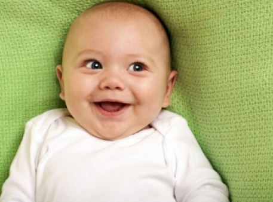

Основні показники розвитку, яких дитина досягає місяць за місяцем у перший рік життя

Із моменту народження до одного року дитина суттєво змінюється. Немовлята ростуть і розвиваються в швидкому
темпі, щомісяця досягаючи нових і нових показників. Зрозуміло, усі молоді батьки замислюються над
питанням:
чого очікувати від немовляти, як зрозуміти, чи в правильному темпі розвивається дитя. Незалежно від того, як
розвивається ваша дитина, вона має широкі можливості досягти необхідних показників на будь-якій стадії
розвитку.
Протягом першого року життя дитина досягає низки показників розвитку (починає хапати предмети, лепетати, у неї
прорізуються зуби). Якщо дитина досягає того чи іншого показника раніше, ніж зазвичай, то решти показників вона
може набути згодом, тому що її тіло в цей момент зайняте вдосконаленням одного певного досвіду.
З огляду на це батькам потрібно знати, які показники розвитку є нормальними для дитини в різному віці та чого
очікувати в найближчому майбутньому. Розгляньмо основні показники розвитку, яких дитина досягає протягом
першого року життя.
Протягом першого року життя з дитиною відбуваються дивні зміни. Зокрема, вага однорічної дитини зазвичай утричі
більша, ніж при народженні. Продовжуйте стежити за темпом розвитку дитини. Однак при цьому майте на увазі
, що кожен малюк розвивається в індивідуальному темпі. Якщо до певного віку дитина ще не досягла певного
показника розвитку з наведеного вище списку, це ще не повинно бути приводом для занепокоєння. Це цілком нормальне
явище.